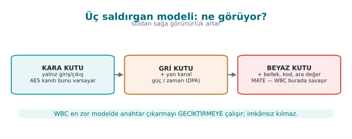
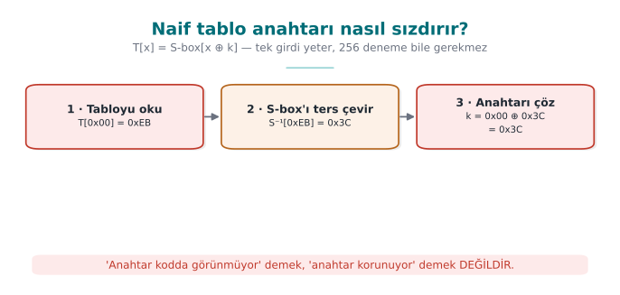
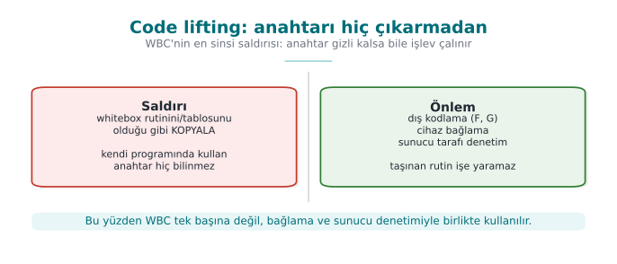
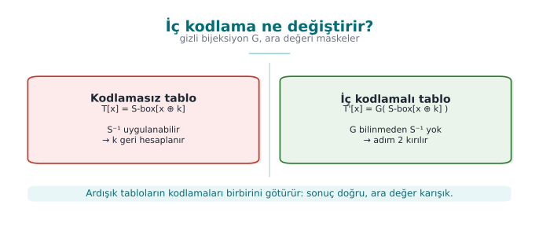
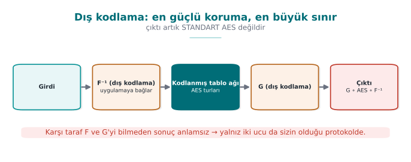
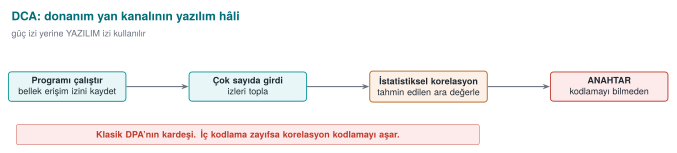
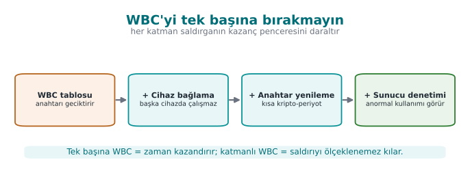
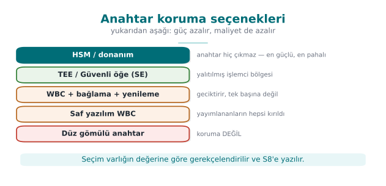

Previous slide Next slide Toggle fullscreen Open presenter view
CEN429 Güvenli Programlama · Hafta 11
Whitebox Kriptografi
CEN429 Güvenli Programlama — Hafta 11
Dr. Öğr. Üyesi Uğur CORUH · 27.11.2026
RTEÜ Bilgisayar Mühendisliği · 2026-2027 Güz
CEN429 Güvenli Programlama · Hafta 11
Bugünün planı (3 saat)
Saat
Bölüm
Konu
1
0–1
Temel kavramlar · kara/gri/beyaz kutu · WBC saldırgan · naif çözümler
2
2
Tablo tabanlı WBC (Chow AES) adım adım · maliyet
3
3–4
Saldırı geçmişi · karşı önlemler · katmanlı yer · donanım · proje
RTEÜ Bilgisayar Mühendisliği · 2026-2027 Güz
CEN429 Güvenli Programlama · Hafta 11
Kısa tarihçe — whitebox kriptografi
1883 — Kerckhoffs : güvenlik anahtarda olmalı, sistemin gizliliğinde değil2002 — Chow vd. ilk whitebox AES/DES (DRM için) — WBC'nin doğuşu2004 — BGE saldırısı ilk WB-AES'i kırar2016 — DCA (Bos vd.): donanım DPA'sı yazılıma taşınır, otomatik kırar2017–2024 — WhibOx : yayımlanan tüm saf-yazılım adaylar kırıldı
Bugünkü kural: WBC bir geciktirme katmanı ; mümkünse donanım (TEE/SE/HSM).
RTEÜ Bilgisayar Mühendisliği · 2026-2027 Güz
CEN429 Güvenli Programlama · Hafta 11
Bu hafta nereye oturuyor?
9. hafta: kod gizleme — "gizleme anahtarı korumaz" dedikBu hafta (11): peki anahtarı yazılımda nasıl koruruz? → whitebox10. hafta: kriptonun doğru kullanımı, anahtar yaşam döngüsü
Bugün "anahtar saldırganın elindeyken ne yaparız?" sorusunu işliyoruz.
RTEÜ Bilgisayar Mühendisliği · 2026-2027 Güz
CEN429 Güvenli Programlama · Hafta 11
Öğrenme çıktısı
Bu hafta ÖÇ.2 / ÖÇ.4 (kriptografi, güvenli iletişim) üstünedir.
Sonunda yapabileceğiniz:
Kara/gri/beyaz kutu modellerini ayırmak
Whitebox'ın ne yaptığını ve neden yetmediğini anlatmak
Bir anahtar için doğru koruma kararı vermek
RTEÜ Bilgisayar Mühendisliği · 2026-2027 Güz
CEN429 Güvenli Programlama · Hafta 11
Baştan bir uyarı
Bugüne kadar yayımlanmış saf yazılım whitebox tasarımlarının hepsi kırıldı .
O yüzden bugün "whitebox = güvenli anahtar" demeyeceğiz.
Diyeceğiz ki: whitebox, anahtar çıkarmayı geciktiren bir katmandır — ve tek başına yeterli değildir.
RTEÜ Bilgisayar Mühendisliği · 2026-2027 Güz
CEN429 Güvenli Programlama · Hafta 11
0. Temel kavramlar (sıfırdan)
RTEÜ Bilgisayar Mühendisliği · 2026-2027 Güz
CEN429 Güvenli Programlama · Hafta 11
Şifreleme nedir?
Şifreleme (encryption): okunur veriyi (açık metin ), bir anahtar kullanarak okunamaz hale (şifreli metin ) getirmek.Çözme (decryption): anahtarla geri açmak.
açık metin --(anahtar ile şifrele)--> şifreli metin
şifreli metin --(anahtar ile çöz)--> açık metin
RTEÜ Bilgisayar Mühendisliği · 2026-2027 Güz
CEN429 Güvenli Programlama · Hafta 11
Anahtar nedir?
Anahtar (key): şifrelemeyi yöneten gizli sayı (bir bayt dizisi).Aynı algoritma + farklı anahtar = farklı sonuç.
Güvenlik anahtarın gizliliğine bağlıdır , algoritmanın gizliliğine değil (Kerckhoffs ilkesi).
RTEÜ Bilgisayar Mühendisliği · 2026-2027 Güz
CEN429 Güvenli Programlama · Hafta 11
Simetrik ve asimetrik
Simetrik: şifreleme ve çözme aynı anahtar (ör. AES ). Hızlı.Asimetrik: açık ve gizli anahtar çifti (ör. RSA). Yavaş ama anahtar dağıtımı kolay.
Bu hafta ağırlıklı AES (simetrik) üstünden gideceğiz.
RTEÜ Bilgisayar Mühendisliği · 2026-2027 Güz
CEN429 Güvenli Programlama · Hafta 11
AES nedir? (yüksekten)
AES: en yaygın simetrik şifreleme algoritması.16 baytlık bloklar üzerinde çalışır.
Veriyi turlar (rounds) halinde karıştırır; her turda: bayt değiştirme, satır/sütun karıştırma, anahtar ekleme.
Ayrıntı bu hafta sınavda sorulmayacak; fikir yeter.
RTEÜ Bilgisayar Mühendisliği · 2026-2027 Güz
CEN429 Güvenli Programlama · Hafta 11
S-box nedir?
S-box (substitution box): bir baytı başka bir baytla değiştiren sabit bir tablo .AES'in "bayt değiştirme" adımı budur.
Örnek: S-box[0x53] = 0xED gibi 256 girişli bir eşleme.
Bu tabloyu aklınızda tutun; whitebox'ın kalbi budur.
RTEÜ Bilgisayar Mühendisliği · 2026-2027 Güz
CEN429 Güvenli Programlama · Hafta 11
Arama tablosu (lookup table)
Arama tablosu: "girdiye karşılık çıktı" veren dizi.T[x] = x için önceden hesaplanmış sonuç.Hesap yapmak yerine tablodan okursunuz ; hızlıdır.
Whitebox, hesabı tablolara gömer.
RTEÜ Bilgisayar Mühendisliği · 2026-2027 Güz
CEN429 Güvenli Programlama · Hafta 11
XOR hatırlatma
XOR (^): bitler farklıysa 1, aynıysa 0.a ^ b ^ b == a → geri alınabilir.AES'te "anahtar ekleme" adımı bir XOR'dur: durum ^ anahtar.
RTEÜ Bilgisayar Mühendisliği · 2026-2027 Güz
CEN429 Güvenli Programlama · Hafta 11
Bit güvenlik düzeyi
"n-bit güvenlik " = kırmak için kabaca 2ⁿ deneme gerekir.
AES-128 → 128 bit; bugün kırılamaz sayılır.
Yüksek sayı = daha güçlü.
RTEÜ Bilgisayar Mühendisliği · 2026-2027 Güz
CEN429 Güvenli Programlama · Hafta 11
Yan kanal (side channel) nedir?
Yan kanal: algoritmanın matematiğini değil, çalışırken sızdırdığı fiziksel/dolaylı bilgiyi kullanan saldırı.Örnek: harcanan zaman , güç tüketimi, elektromanyetik yayım.
Kartlarda klasiktir; birazdan whitebox'ta yazılım karşılığını göreceğiz.
RTEÜ Bilgisayar Mühendisliği · 2026-2027 Güz
CEN429 Güvenli Programlama · Hafta 11
DPA nedir?
DPA (Differential Power Analysis): bir cihazın güç tüketimi ölçümlerine istatistik uygulayıp anahtarı çıkaran yan kanal saldırısı.Cihazın içine bakmaz; dışarıdan ölçer.
Bu fikri aklınızda tutun; whitebox'ın en güçlü saldırısı (DCA) bunun yazılım hâlidir.
RTEÜ Bilgisayar Mühendisliği · 2026-2027 Güz
CEN429 Güvenli Programlama · Hafta 11
Bijeksiyon (birebir-örten eşleme)
Bijeksiyon: her girdiyi tam bir çıktıya eşleyen, tersi alınabilen dönüşüm.Örnek: f(x) = x ^ 0x5A bir bijeksiyondur (tersi yine kendisi).
Whitebox, tabloları gizli bijeksiyonlarla sarar.
RTEÜ Bilgisayar Mühendisliği · 2026-2027 Güz
CEN429 Güvenli Programlama · Hafta 11
TEE ve güvenli öğe (SE)
TEE (Trusted Execution Environment): telefon işlemcisinin, işletim sisteminden yalıtılmış güvenli bölgesi.Güvenli öğe (SE): anahtarları saklayan ayrı, kurcalamaya dirençli donanım çip.
Anahtar için en güçlü koruma bunlardır; whitebox bunların olmadığı durum içindir.
RTEÜ Bilgisayar Mühendisliği · 2026-2027 Güz
CEN429 Güvenli Programlama · Hafta 11
HSM ve SoftHSM
HSM (Hardware Security Module): sunucuda anahtarları saklayan/işleten özel donanım; anahtar dışarı çıkmaz .SoftHSM: HSM'in yazılım benzetimi ; aynı arayüz (PKCS#11), ama donanım koruması yok (geliştirme/test için).
RTEÜ Bilgisayar Mühendisliği · 2026-2027 Güz
CEN429 Güvenli Programlama · Hafta 11
Şimdi hazırız
Bildiğimiz terimler:
şifreleme/çözme · anahtar · simetrik/asimetrik · AES · S-box · arama tablosu · XOR · bit güvenlik · yan kanal · DPA · bijeksiyon · TEE/SE · HSM/SoftHSM
Şimdi asıl soruya: anahtar saldırganın elindeyken ne yaparız?
RTEÜ Bilgisayar Mühendisliği · 2026-2027 Güz
CEN429 Güvenli Programlama · Hafta 11
1. Üç saldırgan modeli
RTEÜ Bilgisayar Mühendisliği · 2026-2027 Güz
CEN429 Güvenli Programlama · Hafta 11
Neden "model"?
Bir savunmayı tasarlamadan önce saldırganın neyi görebildiğini belirlemeliyiz.
Buna saldırgan modeli denir.
Üç model var: kara, gri, beyaz kutu.
RTEÜ Bilgisayar Mühendisliği · 2026-2027 Güz
CEN429 Güvenli Programlama · Hafta 11
Kara kutu
Saldırgan yalnız girdi ve çıktıyı görür.
İçeriyi (anahtar, ara değerler) göremez.
Tipik ortam: uzak sunucu (kod sizde, saldırgan ağdan bağlanıyor).
AES/RSA'nın güvenlik kanıtları bunu varsayar.
RTEÜ Bilgisayar Mühendisliği · 2026-2027 Güz
CEN429 Güvenli Programlama · Hafta 11
Gri kutu
Saldırgan girdi/çıktıya ek olarak yan kanalları görür (zaman, güç, EM).
İçeriyi doğrudan okuyamaz ama dolaylı ölçer.
Tipik ortam: elinde tuttuğu bir akıllı kart ya da gömülü cihaz.
RTEÜ Bilgisayar Mühendisliği · 2026-2027 Güz
CEN429 Güvenli Programlama · Hafta 11
Beyaz kutu
Saldırgan her şeyi görür: kod, bellek, tüm ara değerler.
Üstelik değiştirebilir .
Tipik ortam: yazılım , saldırganın kendi cihazında çalışıyor.
Bu, mobil/masaüstü uygulamanın gerçek durumudur.
RTEÜ Bilgisayar Mühendisliği · 2026-2027 Güz
CEN429 Güvenli Programlama · Hafta 11
Üç model bir arada
Model
Ne görür / yapar
Ortam
Kara
Girdi/çıktı
Uzak sunucu
Gri
+ yan kanal
Akıllı kart
Beyaz
Her şey + değiştirir
Yazılım, kendi cihazı
Kripto kara kutu için tasarlandı; biz beyaz kutudayız .
RTEÜ Bilgisayar Mühendisliği · 2026-2027 Güz
CEN429 Güvenli Programlama · Hafta 11
Üç saldırgan modeli — ne görüyor?

RTEÜ Bilgisayar Mühendisliği · 2026-2027 Güz
CEN429 Güvenli Programlama · Hafta 11
Sorun burada
AES matematiksel olarak güçlü. Ama:
Beyaz kutuda anahtar bellekte bir yerdedir
Saldırgan belleği okuyabilir
O zaman AES'in gücü ne işe yarar?
Güçlü kilit, anahtarı kapının yanına asarsanız işe yaramaz.
RTEÜ Bilgisayar Mühendisliği · 2026-2027 Güz
CEN429 Güvenli Programlama · Hafta 11
Whitebox kriptografi (WBC) fikri
WBC: şifrelemeyi, anahtar hiçbir zaman açıkça bellekte olmayacak biçimde gerçekleştirmek.Anahtar, önceden hesaplanmış arama tablolarının içine gömülür.
Bellekte "işte anahtar bu" diyebileceğiniz bir bayt dizisi yoktur .
RTEÜ Bilgisayar Mühendisliği · 2026-2027 Güz
CEN429 Güvenli Programlama · Hafta 11
WBC bir tanım değil, bir saldırgan modeli
WBC, 2002'de Chow ve arkadaşları tarafından tanımlandı.
Aslında bir saldırgan modelidir : "saldırgan her şeyi görüp değiştirebiliyorsa şifreleme nasıl yapılır?"
RTEÜ Bilgisayar Mühendisliği · 2026-2027 Güz
CEN429 Güvenli Programlama · Hafta 11
WBC saldırgan neler yapabilir? (1)
Gözlemler:
O an işlenen komutlara erişir
Algoritma akışını izler
Kullanılan belleği görür
Yani programın gördüğü her ara değeri o da görür.
RTEÜ Bilgisayar Mühendisliği · 2026-2027 Güz
CEN429 Güvenli Programlama · Hafta 11
WBC saldırgan neler yapabilir? (2)
Değiştirir:
Program belleğini kurcalar
Algoritmanın yalnız bir turunu çalıştırır
if koşullarını değiştirirDöngü sayaçlarını değiştirir
Hata enjekte eder (bir değeri bozar)
RTEÜ Bilgisayar Mühendisliği · 2026-2027 Güz
CEN429 Güvenli Programlama · Hafta 11
Kaynağın uyum maddesi
Teknik kılavuz bu bölümü şu gereksinimle açar:
"Kriptografik anahtarlar, gizlilik ve bütünlüğü korumak için güvence altına alınmalı ve/veya gizlenmelidir. "
RTEÜ Bilgisayar Mühendisliği · 2026-2027 Güz
CEN429 Güvenli Programlama · Hafta 11
Ama hemen ekliyor
Kılavuz, bu saldırgan yeteneklerine karşı koruyanın yalnız WBC olmadığını söyler:
Uygulamayı ve varlıkları koruyan şey, kod sağlamlaştırma (9. hafta) ve RASP (6. hafta) yöntemleridir.
WBC ilk cümleden itibaren tek başına sunulmaz.
RTEÜ Bilgisayar Mühendisliği · 2026-2027 Güz
CEN429 Güvenli Programlama · Hafta 11
Problem neden bu kadar zor?
Temel gerilim:
Program şifrelemek için anahtara erişmek zorunda
Saldırgan da programın gördüğü her şeyi görüyor
Yani anahtar bir noktada saldırganın da görebildiği yerde
WBC bunu "anahtarı tablolara pişirerek" aşmaya çalışır.
RTEÜ Bilgisayar Mühendisliği · 2026-2027 Güz
CEN429 Güvenli Programlama · Hafta 11
Bu gizlilik değil, maliyet
WBC gizliliği kriptodan gizlemeye taşımaz .
Matematiksel bir dönüşümle anahtarı tablolara dağıtır .
Amaç yine 9. haftadaki gibi: anahtarı geri çıkarmayı çok daha pahalı yapmak.
RTEÜ Bilgisayar Mühendisliği · 2026-2027 Güz
CEN429 Güvenli Programlama · Hafta 11
Naif çözümler neden çöker?
RTEÜ Bilgisayar Mühendisliği · 2026-2027 Güz
CEN429 Güvenli Programlama · Hafta 11
Anahtar tablodan nasıl sızıyor — şema

RTEÜ Bilgisayar Mühendisliği · 2026-2027 Güz
CEN429 Güvenli Programlama · Hafta 11
Neden çökenleri öğreniyoruz?
WBC'ye neden ihtiyaç olduğunu görmek için.
Her başarısız "kolay" çözüm, bir güvenli programlama kuralına dönüşür.
RTEÜ Bilgisayar Mühendisliği · 2026-2027 Güz
CEN429 Güvenli Programlama · Hafta 11
Naif 1 · Anahtarı diziye göm
static const uint8_t k[16 ] = { 0x2B , 0x7E , ... };
En kolay yol, en zayıf yol.
RTEÜ Bilgisayar Mühendisliği · 2026-2027 Güz
CEN429 Güvenli Programlama · Hafta 11
Naif 1 · Nasıl kırılır?
strings / bayt taraması: 16 baytlık blok görünürEntropi taraması: yüksek entropili blok "anahtar burada" der (Shamir–van Someren gözlemi)Hata ayıklayıcı: şifreleme çağrısında bu bloğun kullanıldığını doğrular
Süre: dakikalar.
RTEÜ Bilgisayar Mühendisliği · 2026-2027 Güz
CEN429 Güvenli Programlama · Hafta 11
Naif 1 · Kural
Düz gömülü anahtar bir anahtar koruması değildir .
Bu, 9. haftadaki "dize gizleme anahtar saklamaz" kuralının ta kendisi.
RTEÜ Bilgisayar Mühendisliği · 2026-2027 Güz
CEN429 Güvenli Programlama · Hafta 11
Naif 2 · XOR ile "karıştır"
static const uint8_t k_gizli[16 ] = ...;
"Anahtarı bir maskeyle XOR'layıp saklayayım."
RTEÜ Bilgisayar Mühendisliği · 2026-2027 Güz
CEN429 Güvenli Programlama · Hafta 11
Naif 2 · Neden çöker?
Maske de ikili dosyadadırProgram k'yı çözebiliyorsa, saldırgan da çözer
Sadece bir adım fazladan; gerçek bir engel değil
Program neyi yapabiliyorsa, beyaz kutu saldırgan da yapar.
RTEÜ Bilgisayar Mühendisliği · 2026-2027 Güz
CEN429 Güvenli Programlama · Hafta 11
Naif 3 tehdidi · Kod taşıma (code lifting)
Diyelim WBC anahtarı tablolara gömdü.
Saldırgan anahtarı hiç çıkarmadan , şifreleme yapan kod parçasını (tablolar + yorumlayıcı) olduğu gibi kopyalar .
Kendi programında kullanır: anahtarı bilmeden işlevini çalar .
RTEÜ Bilgisayar Mühendisliği · 2026-2027 Güz
CEN429 Güvenli Programlama · Hafta 11
Code lifting — şema

RTEÜ Bilgisayar Mühendisliği · 2026-2027 Güz
CEN429 Güvenli Programlama · Hafta 11
Kod taşıma · Kural
WBC'nin "anahtarı gizledim" demesi yetmez.
Kod taşımaya karşı cihaz/sürüm bağlama gerekir (birazdan 3. bölüm): tablolar yalnız belirli bir cihazda/sürümde anlamlı olsun.
RTEÜ Bilgisayar Mühendisliği · 2026-2027 Güz
CEN429 Güvenli Programlama · Hafta 11
Naif çözümler: özet
Naif çözüm
Kıran
Diziye gömülü anahtar
strings + entropi + gdb
XOR/whitening
maske de içeride
(WBC bile)
kod taşıma → cihaz bağlama gerekir
RTEÜ Bilgisayar Mühendisliği · 2026-2027 Güz
CEN429 Güvenli Programlama · Hafta 11
Bölüm 1 — kısa sınama
Kara, gri, beyaz kutu farkı?
AES güçlüyken beyaz kutuda sorun ne?
Anahtarı diziye gömmek neden koruma değil?
RTEÜ Bilgisayar Mühendisliği · 2026-2027 Güz
CEN429 Güvenli Programlama · Hafta 11
Bölüm 1 — cevaplar
Kara: yalnız girdi/çıktı · Gri: + yan kanallar (zaman/güç) · Beyaz: her şey + değiştirir.Anahtar bir noktada bellekte ; beyaz kutu saldırgan onu görür. AES'in gücü kara kutu varsayımına dayanır.
strings + entropi taraması + gdb ile dakikalar içinde bulunur; program onu kullanmak zorundadır.
RTEÜ Bilgisayar Mühendisliği · 2026-2027 Güz
CEN429 Güvenli Programlama · Hafta 11
2. Tablo tabanlı WBC (adım adım)
RTEÜ Bilgisayar Mühendisliği · 2026-2027 Güz
CEN429 Güvenli Programlama · Hafta 11
Ne öğreneceğiz?
Chow ve arkadaşlarının 2002 AES tasarımı, tablo tabanlı WBC'nin klasiğidir.
Fikri (nasıl çalışır)Maliyeti (tablo boyutu, hız)Sınırı (neden yeterli değil)
Sınavda matematik yok; fikir ve sınır var.
RTEÜ Bilgisayar Mühendisliği · 2026-2027 Güz
CEN429 Güvenli Programlama · Hafta 11
Hatırlatma: bir AES turunun iki adımı
Durum baytını tur anahtarıyla XOR 'la: x ^ k
Sonucu S-box 'tan geçir: S-box[x ^ k]
Bu iki adım, sabit bir k için birleştirilebilir mi? Evet.
RTEÜ Bilgisayar Mühendisliği · 2026-2027 Güz
CEN429 Güvenli Programlama · Hafta 11
Adım 1 · Anahtarı tabloya "pişir"
Normal: çıktı = S-box[ x ^ k ]
WBC: T[x] = S-box[ x ^ k ] (256 girişli tablo)
Artık kodda k diye bir değişken yok . k, tablonun içine gömülü.
RTEÜ Bilgisayar Mühendisliği · 2026-2027 Güz
CEN429 Güvenli Programlama · Hafta 11
Adım 1 · Ne kazandık?
Bellekte k adında bir bayt dizisi yok
Sadece T tablosu var (256 giriş)
Görünüşte anahtar kayboldu. Ama...
RTEÜ Bilgisayar Mühendisliği · 2026-2027 Güz
CEN429 Güvenli Programlama · Hafta 11
Adım 1 · Neden tek başına güvensiz?
T, S-box'ın x ^ k ile ötelenmiş haliSaldırgan T'yi bilinen S-box ile karşılaştırır
Öteleme miktarından k'yı geri çıkarır
Bu yüzden tabloları kodlamak gerekir.
RTEÜ Bilgisayar Mühendisliği · 2026-2027 Güz
CEN429 Güvenli Programlama · Hafta 11
Adım 2 · Tabloları büyüt (T-box)
Tek bayt eşlemesi yerine, S-box ile AES'in karıştırma adımını (MixColumns) birleştir
Sonuç: 8 bit girip 32 bit çıkaran daha büyük tablolar (T-box )
Baytlar arası XOR'lar da küçük XOR tabloları (4 bit) olur
RTEÜ Bilgisayar Mühendisliği · 2026-2027 Güz
CEN429 Güvenli Programlama · Hafta 11
Adım 2 · Sonuç
Bütün tur, bir arama tabloları ağına dönüşür
Hiçbir yerde açık bir aritmetik anahtar işlemi görünmez
Ama tablolar hâlâ tek başına incelenebilir → kodlama şart
RTEÜ Bilgisayar Mühendisliği · 2026-2027 Güz
CEN429 Güvenli Programlama · Hafta 11
Adım 3 · İç kodlamalar (internal encodings)
Her tablonun çıkışına gizli bir bijeksiyon uygula
Bir sonraki tablonun girişinde onun tersini uygula
Ardışık kodlamalar birbirini götürür → sonuç doğru
Ama ara değerler karışık görünür.
RTEÜ Bilgisayar Mühendisliği · 2026-2027 Güz
CEN429 Güvenli Programlama · Hafta 11
İç kodlama — şema

RTEÜ Bilgisayar Mühendisliği · 2026-2027 Güz
CEN429 Güvenli Programlama · Hafta 11
Adım 3 · Neyi engeller?
Bir tabloyu tek başına inceleyen saldırganı durdurmayı amaçlar.
Çünkü o tablonun girişi/çıkışı, gizli bir kodlamayla bozulmuştur.
RTEÜ Bilgisayar Mühendisliği · 2026-2027 Güz
CEN429 Güvenli Programlama · Hafta 11
Adım 4 · Karıştırıcı bijeksiyonlar
İç kodlamalara ek olarak, GF(2) üzerinde doğrusal karıştırıcı matrisler (8×8, 32×32)
Bunlar bilgiyi tablolar arasında yayar
Bir tablodan sızan bilgi tek başına anlamlı olmaz
(GF(2) = bitlerle, XOR aritmetiğiyle çalışan matematik; ayrıntı gerekmez.)
RTEÜ Bilgisayar Mühendisliği · 2026-2027 Güz
CEN429 Güvenli Programlama · Hafta 11
Adım 4 · Tablo tipleri
Chow'un tasarımında bu kodlanmış/karıştırılmış tabloların tipleri vardır (literatürde I–IV).
Her tip farklı bir rol üstlenir.
Ders için: "tablolar tek tip değil, çeşitli" bilmek yeter.
RTEÜ Bilgisayar Mühendisliği · 2026-2027 Güz
CEN429 Güvenli Programlama · Hafta 11
Adım 5 · Dış kodlamalar F ve G
En dışta, tüm şifre iki gizli bijeksiyonla sarılır: F ve G
Kaynak kılavuz: "whitebox AES işlemi F ve G adlı iki rastgele tekil-olmayan matrisle kapsüllenir"
Yani ağ artık saf AES değil:
Girdi --F⁻¹--> [ kodlanmış tablolar ağı ] --G--> Çıktı
= G ∘ AES ∘ F⁻¹
RTEÜ Bilgisayar Mühendisliği · 2026-2027 Güz
CEN429 Güvenli Programlama · Hafta 11
Dış kodlama F/G — şema

RTEÜ Bilgisayar Mühendisliği · 2026-2027 Güz
CEN429 Güvenli Programlama · Hafta 11
Adım 5 · Dış kodlama neden güçlü?
Saldırganın gördüğü giriş/çıkış standart AES'in giriş/çıkışı değil
Tek başına tablolara bakan pek çok saldırıyı (istatistiksel/cebirsel) çok zorlaştırır
RTEÜ Bilgisayar Mühendisliği · 2026-2027 Güz
CEN429 Güvenli Programlama · Hafta 11
Adım 5 · Ama en büyük sınır da bu
G ∘ AES ∘ F⁻¹ standart AES değildir.
Karşı taraf (sunucu/başka uç) F ve G'yi bilip geri almadan sonuç anlamsız
Yani dış kodlamalı WBC yalnız iki ucu da sizde olan protokolde kullanılır
EMV gibi standart AES bekleyen bir protokolde kullanılamayabilir
RTEÜ Bilgisayar Mühendisliği · 2026-2027 Güz
CEN429 Güvenli Programlama · Hafta 11
Beş adım · özet
Anahtarı tabloya pişir
Tabloları büyüt (T-box + XOR tabloları)
İç kodlamalar
Karıştırıcı bijeksiyonlar
Dış kodlamalar (F, G)
Sonuç: anahtar açıkça yok; her şey kodlanmış tablolarda.
RTEÜ Bilgisayar Mühendisliği · 2026-2027 Güz
CEN429 Güvenli Programlama · Hafta 11
WBC'nin maliyeti
RTEÜ Bilgisayar Mühendisliği · 2026-2027 Güz
CEN429 Güvenli Programlama · Hafta 11
WBC bedava değil (1)
Anahtarı tablolara gömmenin bedeli: kocaman tablolar .
Ölçüt
Yaklaşık (mertebe)
Tablo boyutu
Yüzlerce KB (~770 KB)
Karşılaştırma
Std AES anahtarı: 16–32 bayt
RTEÜ Bilgisayar Mühendisliği · 2026-2027 Güz
CEN429 Güvenli Programlama · Hafta 11
WBC bedava değil (2)
Ölçüt
Yaklaşık (mertebe)
Tur başına tablo okuması
Binlerce (~3000)
Hız
Std AES'e göre ~50× yavaş
RTEÜ Bilgisayar Mühendisliği · 2026-2027 Güz
CEN429 Güvenli Programlama · Hafta 11
Ölçü hissi: tablo boyutu hesabı
Örnek: 288 tablo × 1 KB ≈ 294.912 bayt (~288 KB).
Amaç kesin sayı değil, mertebe
Bu yüzden WBC yalnız seçili, kritik işlemlere uygulanır
Aynı mantık 9. haftadaki sanallaştırma (K-10) ile birebir
RTEÜ Bilgisayar Mühendisliği · 2026-2027 Güz
CEN429 Güvenli Programlama · Hafta 11
Bölüm 2 — kısa sınama
T[x] = S-box[x ^ k] tek başına neden güvensiz?İç kodlama ile dış kodlama farkı?
Dış kodlamanın (F, G) en büyük sınırı ne?
WBC neden yalnız seçili işlemlere uygulanır?
RTEÜ Bilgisayar Mühendisliği · 2026-2027 Güz
CEN429 Güvenli Programlama · Hafta 11
Bölüm 2 — cevaplar
T, bilinen S-box'ın x^k ile ötelenmişidir; iki tablo karşılaştırılıp k geri çıkar .İç: tablolar arası ara değerleri karıştırır · Dış (F,G): tüm şifreyi sarar (G∘AES∘F⁻¹).Artık standart AES değildir ; karşı taraf F/G'yi bilmeli — EMV gibi standartlarda kullanılamayabilir.
Tablolar yüzlerce KB + ~50× yavaş; maliyet yüzünden yalnız küçük/kritik işlemler.
RTEÜ Bilgisayar Mühendisliği · 2026-2027 Güz
CEN429 Güvenli Programlama · Hafta 11
3. Saldırı geçmişi ve karşı önlemler
RTEÜ Bilgisayar Mühendisliği · 2026-2027 Güz
CEN429 Güvenli Programlama · Hafta 11
WBC kırılma tarihi — şema
RTEÜ Bilgisayar Mühendisliği · 2026-2027 Güz
CEN429 Güvenli Programlama · Hafta 11
Neden geçmişe bakıyoruz?
Bir korumaya ne kadar güveneceğinizi, onun kırılma geçmişi söyler.
Her satır, savunmacı için bir çıkarım dır.
RTEÜ Bilgisayar Mühendisliği · 2026-2027 Güz
CEN429 Güvenli Programlama · Hafta 11
2002 · Doğuş
Chow ve arkadaşları WB-AES ve WB-DES tasarımlarını yayımlar.
Tablo tabanlı yaklaşım doğar.
Çıkarım: fikir umut verici; ama sınanmadı.
RTEÜ Bilgisayar Mühendisliği · 2026-2027 Güz
CEN429 Güvenli Programlama · Hafta 11
2004 · BGE saldırısı
BGE (Billet–Gilbert–Ech-Chatbi): Chow AES'i pratik sürede kırar (~2³⁰ işlem).İç kodlamaları çözer.
Çıkarım: iç kodlamalar tek başına yetmez .
RTEÜ Bilgisayar Mühendisliği · 2026-2027 Güz
CEN429 Güvenli Programlama · Hafta 11
2007 · WB-DES düşer
Goubin, Wyseur ve diğerleri WB-DES ve harici kodlamalı türevlerini kırar.
Çıkarım: DES tabanlı WBC bırakılır.
RTEÜ Bilgisayar Mühendisliği · 2026-2027 Güz
CEN429 Güvenli Programlama · Hafta 11
2010'lar · "Daha çok tablo" denemesi
Karroumi'nin "çift AES" güçlendirmesi de kırılır (~2²²).
Çıkarım: daha çok tablo = daha çok güç değildir .
RTEÜ Bilgisayar Mühendisliği · 2026-2027 Güz
CEN429 Güvenli Programlama · Hafta 11
2015 · DFA (hata enjeksiyonu)
DFA (Differential Fault Analysis): çalışırken bir değere hata enjekte edip bozulan çıktıdan anahtarı geri hesaplar."Unboxing the White-Box" (Black Hat EU).
Çıkarım: tasarımın iç matematiğini bilmeden de kırılır.
RTEÜ Bilgisayar Mühendisliği · 2026-2027 Güz
CEN429 Güvenli Programlama · Hafta 11
2016 · DCA (en önemlisi)
DCA (Differential Computation Analysis): çalışırken üretilen ara değerlerin izini toplar, DPA benzeri istatistikle anahtarı çıkarır.İç kodlamaları çoğu zaman görmezden gelir .
Çıkarım: klasik yan kanal savunmaları WBC için de gerekli.
RTEÜ Bilgisayar Mühendisliği · 2026-2027 Güz
CEN429 Güvenli Programlama · Hafta 11
DCA saldırısı — şema

RTEÜ Bilgisayar Mühendisliği · 2026-2027 Güz
CEN429 Güvenli Programlama · Hafta 11
2017–2024 · WhibOx yarışmaları
Akademi ve endüstri tasarımlarını yarışmaya gönderir.
Gönderilen tasarımların tamamı kırıldı .
Çıkarım (bugün): kırılmadan kalan yayımlanmış saf-yazılım WBC yok .
RTEÜ Bilgisayar Mühendisliği · 2026-2027 Güz
CEN429 Güvenli Programlama · Hafta 11
Kronoloji · özet
Yıl
Olay
Çıkarım
2002
Chow WB-AES/DES
Doğuş
2004
BGE
İç kodlama yetmez
2007
WB-DES kırıldı
DES bırakılır
2010'lar
Karroumi kırıldı
Çok tablo ≠ güç
2015
DFA
Matematiği bilmeden
2016
DCA
Yan kanal savunması gerek
2017–24
WhibOx
Hepsi kırıldı
RTEÜ Bilgisayar Mühendisliği · 2026-2027 Güz
CEN429 Güvenli Programlama · Hafta 11
DCA ve DFA neden yeni tasarımları da vurur?
Çünkü ikisi de tasarımın gizli matematiğini çözmeye çalışmaz :
DCA: kutuyu açmaz; çalışırken iz toplar, istatistikle anahtarı bulurDFA: çalışırken hata enjekte eder , bozuk çıktıdan hesaplar
Genel ve taşınabilir oldukları için her tasarımı tehdit ederler.
RTEÜ Bilgisayar Mühendisliği · 2026-2027 Güz
CEN429 Güvenli Programlama · Hafta 11
Peki ne yapacağız? (karşı önlemler)
Araştırma durmadı; ama hiçbir önlem "artık güvenli" demez.
Hepsi maliyeti artırır ve birlikte kullanılır. Sırayla:
RTEÜ Bilgisayar Mühendisliği · 2026-2027 Güz
CEN429 Güvenli Programlama · Hafta 11
Karşı önlem 1 · Doğrusal olmayan maskeleme
DCA'nın dayandığı doğrusal korelasyonu bozmaya çalışır (ör. Biryukov–Udovenko 2018).
İstatistiksel saldırıyı zorlaştırır.
RTEÜ Bilgisayar Mühendisliği · 2026-2027 Güz
CEN429 Güvenli Programlama · Hafta 11
Karşı önlem 2 · Dış kodlama (F, G)
DCA/DFA/BGE'yi zorlaştırır.
Ama gördüğümüz sınır: standart AES uyumluluğunu kırar.
RTEÜ Bilgisayar Mühendisliği · 2026-2027 Güz
CEN429 Güvenli Programlama · Hafta 11
Karşı önlem 3 · Katmanlı savunma
WBC'nin çevresine 9. haftanın gizleme kuralları
haftanın RASP 'ı (anti-debug, kurcalama/bütünlük denetimi)
Amaç: DCA'nın iz toplamasını, DFA'nın hata enjekte etmesini zorlaştırmak
RTEÜ Bilgisayar Mühendisliği · 2026-2027 Güz
CEN429 Güvenli Programlama · Hafta 11
Katmanlı WBC — şema

RTEÜ Bilgisayar Mühendisliği · 2026-2027 Güz
CEN429 Güvenli Programlama · Hafta 11
Karşı önlem 4 · Anahtar yenileme
Anahtar sık yenilenirse, bir anahtarı çıkarmanın değeri düşer
hafta: kripto-periyot (bir anahtarın ömrü)
RTEÜ Bilgisayar Mühendisliği · 2026-2027 Güz
CEN429 Güvenli Programlama · Hafta 11
Karşı önlem 5 · Cihaz/sürüm bağlama
Tablolar yalnız belirli bir cihazda/sürümde anlamlı olur
Kod taşımayı (code lifting) engeller
RTEÜ Bilgisayar Mühendisliği · 2026-2027 Güz
CEN429 Güvenli Programlama · Hafta 11
Karşı önlem 6 · Sunucu tarafı risk denetimi
Uçtaki koruma ne olursa olsun, işlem sunucuda ayrıca değerlendirilir
Hız sınırı, anomali tespiti, sayaç/ATC denetimi
Son ve en güvenilir savunma
RTEÜ Bilgisayar Mühendisliği · 2026-2027 Güz
CEN429 Güvenli Programlama · Hafta 11
Karşı önlem 7 · Donanıma taşı
Mümkünse anahtarı hiç yazılıma koyma
TEE, güvenli öğe (SE), HSM
Bu, bir sonraki bölümün konusu.
RTEÜ Bilgisayar Mühendisliği · 2026-2027 Güz
CEN429 Güvenli Programlama · Hafta 11
Ana kural (tekrar)
WBC bir katmandır , çözüm değil.
Doğru ifade: "anahtar çıkarmayı şu kadar geciktiriyorum; asıl güvencem anahtar yenileme, cihaz bağlama ve sunucu risk denetiminde."
RTEÜ Bilgisayar Mühendisliği · 2026-2027 Güz
CEN429 Güvenli Programlama · Hafta 11
Bölüm 3 — kısa sınama
"Hepsi kırıldı" ifadesi kararınızı nasıl etkiler?
DCA hangi klasik saldırıya benzer?
İç kodlamalar DCA'yı neden her zaman durdurmaz?
En güvenilir son savunma hangisi?
RTEÜ Bilgisayar Mühendisliği · 2026-2027 Güz
CEN429 Güvenli Programlama · Hafta 11
Bölüm 3 — cevaplar
WBC tek başına güvence değil; anahtar yenileme + cihaz bağlama + sunucu denetimi + gizleme ile; mümkünse donanıma taşı.
DPA 'ya (güç analizi) — DCA onun yazılım hâlidir.İç kodlama birebir eşlemedir (bijeksiyon); istatistiksel korelasyon çoğu zaman hayatta kalır.
Sunucu tarafı risk denetimi (son ve en güvenilir).
RTEÜ Bilgisayar Mühendisliği · 2026-2027 Güz
CEN429 Güvenli Programlama · Hafta 11
4. Katmanlı yer, donanım, proje
RTEÜ Bilgisayar Mühendisliği · 2026-2027 Güz
CEN429 Güvenli Programlama · Hafta 11
Anahtar korumak: seçenekler
WBC tek seçenek değil. Bir anahtarı korumanın yolları var; güç ve maliyet farklı.
Sırayla, en zayıftan en güçlüye.
RTEÜ Bilgisayar Mühendisliği · 2026-2027 Güz
CEN429 Güvenli Programlama · Hafta 11
Anahtar koruma seçenekleri — şema

RTEÜ Bilgisayar Mühendisliği · 2026-2027 Güz
CEN429 Güvenli Programlama · Hafta 11
Seçenek 1 · Sabit dizide düz anahtar
Anahtar: yazılımda, açık
Güç: yok
Ne zaman: asla
RTEÜ Bilgisayar Mühendisliği · 2026-2027 Güz
CEN429 Güvenli Programlama · Hafta 11
Seçenek 2 · Gizlenmiş/parçalanmış anahtar
Anahtar: yazılımda, gizlenmiş
Güç: çok düşük
Ne zaman: yalnız düşük değerli, kısa ömürlü sırlar
RTEÜ Bilgisayar Mühendisliği · 2026-2027 Güz
CEN429 Güvenli Programlama · Hafta 11
Seçenek 3 · WBC + katmanlı savunma
Anahtar: yazılımda, tablolara gömülü
Güç: orta (geciktirir)
Ne zaman: donanım kökü yoksa; anahtar yenileme + sunucu denetimiyle
RTEÜ Bilgisayar Mühendisliği · 2026-2027 Güz
CEN429 Güvenli Programlama · Hafta 11
Seçenek 4 · TEE / Güvenli Öğe (SE)
Anahtar: donanımla yalıtılmış
Güç: yüksek
Ne zaman: cihaz destekliyorsa tercih edilir
RTEÜ Bilgisayar Mühendisliği · 2026-2027 Güz
CEN429 Güvenli Programlama · Hafta 11
Seçenek 5 · HSM / SoftHSM
Anahtar: donanım (ya da yazılım benzetimi) modülünde
Güç: yüksek (HSM); SoftHSM yalnız test
Ne zaman: sunucu tarafı ; anahtar hiç dışarı çıkmaz
RTEÜ Bilgisayar Mühendisliği · 2026-2027 Güz
CEN429 Güvenli Programlama · Hafta 11
Seçenekler · tek tablo
Seçenek
Anahtar nerede
Güç
Düz dizi
Yazılımda açık
Yok
Gizli/parçalı
Yazılımda gizli
Çok düşük
WBC + katman
Tablolara gömülü
Orta
TEE / SE
Donanım yalıtık
Yüksek
HSM / SoftHSM
Donanım modülü
Yüksek
RTEÜ Bilgisayar Mühendisliği · 2026-2027 Güz
CEN429 Güvenli Programlama · Hafta 11
Karar kuralı
Anahtarı yazılıma koymak zorunda değilsen, koyma.
Donanım kökü (TEE/SE/HSM) varsa onu kullan
WBC, donanım kökünün olmadığı durumda bir ödünleşim çözümüdür
Her zaman: anahtar yenileme + cihaz bağlama + sunucu denetimiyle birlikte
RTEÜ Bilgisayar Mühendisliği · 2026-2027 Güz
CEN429 Güvenli Programlama · Hafta 11
SoftHSM ve PKCS#11 (sunucu köprüsü)
PKCS#11: anahtar modülleriyle konuşmanın standart arayüzüUygulama anahtarın değerini görmez ; "şunu imzala/şifrele" der
SoftHSM: aynı arayüzü sunan yazılım benzetimi; gerçek donanım koruması yok → geliştirme/test için
WBC uçtaki (istemci) problem; bu sunucudaki anahtar problemine yanıt.
RTEÜ Bilgisayar Mühendisliği · 2026-2027 Güz
CEN429 Güvenli Programlama · Hafta 11
Hatalı → saldırı → koruma
RTEÜ Bilgisayar Mühendisliği · 2026-2027 Güz
CEN429 Güvenli Programlama · Hafta 11
1 · Hatalı tasarım
static const uint8_t k[16 ] = { ... };
Bir istemci, bir veri şifreleme anahtarını sabit diziye gömer.
RTEÜ Bilgisayar Mühendisliği · 2026-2027 Güz
CEN429 Güvenli Programlama · Hafta 11
2 · Saldırı (kavramsal)
strings + entropi taraması → yüksek entropili 16 baytlık blokHata ayıklayıcı → bu bloğun şifreleme çağrısında kullanıldığını doğrular
Anahtar dakikalar içinde çıkar
RTEÜ Bilgisayar Mühendisliği · 2026-2027 Güz
CEN429 Güvenli Programlama · Hafta 11
3 · Koruma (katmanlı) — a
Anahtarı mümkünse TEE/SE 'ye taşı
Değilse WBC tablolarına göm (düz bayt dizisi kalmasın)
RTEÜ Bilgisayar Mühendisliği · 2026-2027 Güz
CEN429 Güvenli Programlama · Hafta 11
3 · Koruma (katmanlı) — b
WBC'yi 9. haftanın gizlemesiyle ve 6. haftanın RASP 'ıyla sar
DCA için iz toplamak, DFA için hata enjekte etmek zorlaşır
Cihaz/sürüm bağla → kod taşıma işe yaramaz
RTEÜ Bilgisayar Mühendisliği · 2026-2027 Güz
CEN429 Güvenli Programlama · Hafta 11
3 · Koruma (katmanlı) — c
Anahtarı sık yenile (kısa kripto-periyot)
Sunucuda risk denetimi uygula (hız sınırı, anomali)
RTEÜ Bilgisayar Mühendisliği · 2026-2027 Güz
CEN429 Güvenli Programlama · Hafta 11
4 · Dürüst kalan risk
Yeterince kararlı bir saldırgan tek bir cihazda anahtarı yine çıkarabilir
Ama artık:
Bir kopyayı kırmak bütün sistemi açmaz (cihaz bağlama)
Çıkarılan anahtarın ömrü kısa (yenileme)
Sunucu, anormal kullanımı yakalar
RTEÜ Bilgisayar Mühendisliği · 2026-2027 Güz
CEN429 Güvenli Programlama · Hafta 11
Senaryodan çıkan kurallar
Anahtarı düz gömme
Donanım kökü varsa kullan
WBC'yi asla tek başına bırakma
Cihaz bağlama + yenileme + sunucu denetimi
RTEÜ Bilgisayar Mühendisliği · 2026-2027 Güz
CEN429 Güvenli Programlama · Hafta 11
Proje ve kapanış
RTEÜ Bilgisayar Mühendisliği · 2026-2027 Güz
CEN429 Güvenli Programlama · Hafta 11
Proje · S8 (anahtar koruma gerekçesi) — 1
En az bir hassas anahtar için bir koruma kararı ve gerekçesi yazın:
1. Anahtar nerede durur, nasıl korunur? (düz değilse: TEE/SE, WBC, gizleme — hangisi, neden )
RTEÜ Bilgisayar Mühendisliği · 2026-2027 Güz
CEN429 Güvenli Programlama · Hafta 11
Proje · S8 — 2
2. Koruma yeterli değilse (ör. saf yazılımdaysanız) bunu açıkça yazın ve telafi katmanlarını belirtin:
anahtar yenileme periyodu
cihaz/sürüm bağlama
sunucu risk denetimi
RTEÜ Bilgisayar Mühendisliği · 2026-2027 Güz
CEN429 Güvenli Programlama · Hafta 11
Proje · S8 — 3
3. WBC kullanmadıysanız neden kullanmadığınızın gerekçesi:
maliyet
donanım kökü var
varlık değeri düşük
Gerekçeli bir "kullanmadık" tam bir yanıttır.
RTEÜ Bilgisayar Mühendisliği · 2026-2027 Güz
CEN429 Güvenli Programlama · Hafta 11
⚠️ Depoda gerçek anahtar olmasın
Bütün anahtar dosyaları, tablolar ve örnekler sentetik olmalı
Sertifikasyonda depoda gerçek anahtar = en ağır bulgulardan biri
Projede de öyle sayılır
RTEÜ Bilgisayar Mühendisliği · 2026-2027 Güz
CEN429 Güvenli Programlama · Hafta 11
Terimler sözlüğü (1)
Terim
Anlam
Kara/gri/beyaz kutu
Saldırganın gördüğü
WBC
Beyaz kutuda çalışan kripto
S-box
Baytı değiştiren sabit tablo
Bijeksiyon
Tersi alınabilen birebir eşleme
İç/dış kodlama
Tablo içi / tüm şifreyi saran gizli dönüşüm
RTEÜ Bilgisayar Mühendisliği · 2026-2027 Güz
CEN429 Güvenli Programlama · Hafta 11
Terimler sözlüğü (2)
Terim
Anlam
Kod taşıma
Anahtarı çıkarmadan kodu kopyalama
DCA
Çalışma izlerine DPA benzeri istatistik
DFA
Hata enjekte edip anahtarı hesaplama
Kripto-periyot
Bir anahtarın ömrü
TEE/SE/HSM
Donanım tabanlı anahtar koruması
RTEÜ Bilgisayar Mühendisliği · 2026-2027 Güz
CEN429 Güvenli Programlama · Hafta 11
Kendini sınama (1–6)
Üç saldırgan modeli; AES kanıtı hangisini varsayar?
"Tek turu çalıştır" ve "hata enjekte et" hangi saldırılara zemin?
Diziye gömülü anahtar neden koruma değil? (entropi)
Kod taşıma nedir, hangi önlem kapatır?
T[x]=S-box[x^k] tek başına neden güvensiz?İç ve dış kodlama farkı; dış kodlamanın sınırı?
RTEÜ Bilgisayar Mühendisliği · 2026-2027 Güz
CEN429 Güvenli Programlama · Hafta 11
Kendini sınama — cevaplar (1–6)
Kara kutu (yalnız G/Ç), gri kutu (+yan kanal: güç/zaman), beyaz kutu (tam erişim). Klasik AES kanıtı kara kutuyu varsayar."Tek turu çalıştır/ara değeri gözle" → DCA ; "hata enjekte et" → DFA .
Anahtar yüksek entropili bir blok olarak durur → entropi taraması/strings/desenle bulunur (demo --tara). Konum değiştirmek gizleme değil.
Code lifting: tabloyu/rutini olduğu gibi kopyalayıp başka yerde kullanmak. Kapatan: dış kodlama (+ cihaz bağlama/sunucu denetimi).T[x]=S-box[x^k] doğrudan k'ye bağlı; tablo S-box ile karşılaştırılıp k geri hesaplanır . İç kodlamayla maskele.İç kodlama ara değerleri gizli bijeksiyonlarla maskeler; dış kodlama giriş/çıkışı dönüştürür (code lifting'i zorlaştırır). Sınır: çağıranın da eşleşmesi gerekir → standart AES uyumu bozulur.
RTEÜ Bilgisayar Mühendisliği · 2026-2027 Güz
CEN429 Güvenli Programlama · Hafta 11
Kendini sınama (7–12)
Tablo boyutu/hız mertebesi? Neden seçili işlemlere?
"Hepsi kırıldı" kararınızı nasıl etkiler?
DCA hangi donanım saldırısına benzer?
Anahtar koruma seçeneklerini güç/maliyetle sırala
WBC kullanıyorsan eklemen gereken 3 katman?
Bir anahtar için S8 gerekçesini üç cümleyle yaz
RTEÜ Bilgisayar Mühendisliği · 2026-2027 Güz
CEN429 Güvenli Programlama · Hafta 11
Kendini sınama — cevaplar (7–12)
Tablolar MB mertebesinde ve kara kutuya göre onlarca-yüzlerce kat yavaş → yalnız seçili/kritik işlemlere uygulanır.
WBC'yi tek başına anahtar koruması saymayız; geciktirici katman olarak yenileme + bağlama + sunucu denetimiyle kullanırız (mümkünse donanım).
DPA'ya (Differential Power Analysis); DCA güç izinin yerine yazılım izini (bellek erişimi/ara değer) koyar.(zayıf→güçlü) düz gömülü anahtar < kodlanmış tablo (saf-yazılım WBC) < WBC+bağlama/yenileme < TEE/SE < HSM/donanım . Maliyet aynı yönde artar.
Anahtar yenileme · cihaz/uygulama bağlama · sunucu tarafı denetim/iptal (+ RASP/bütünlük).Örnek: "DEK, beklemedeki veriyi AES-256-GCM ile korur. HSM'de üretilir/saklanır, düz bellekte tutulmaz. Saf-yazılım whitebox'lar kırıldığı ve varlık değeri yüksek olduğu için donanım seçildi."
RTEÜ Bilgisayar Mühendisliği · 2026-2027 Güz
CEN429 Güvenli Programlama · Hafta 11
Özet: bu haftanın tek cümlesi
Yayımlanmış saf-yazılım whitebox'ların hepsi kırıldı; WBC anahtar çıkarmayı geciktiren bir katmandır ve
RTEÜ Bilgisayar Mühendisliği · 2026-2027 Güz
CEN429 Güvenli Programlama · Hafta 11
Kaynaklar
Güvenli programlama teknik kılavuzu — WBC saldırgan modeli, whitebox AES'in konumuChow, Eisen, Johnson, van Oorschot — WB-AES (SAC 2002), WB-DES (DRM 2002)
Wyseur — "Hiding Keys in Software" (kısa giriş)
BGE (SAC 2004); Bos vd. DCA (CHES 2016); "Unboxing the White-Box" (BH EU 2015)
WhibOx yarışması sonuçları (2017–2024)
RTEÜ Bilgisayar Mühendisliği · 2026-2027 Güz
CEN429 Güvenli Programlama · Hafta 11
Sonraki hafta
12. hafta — Sertifikasyon ve sızma testi planlaması
Bir korumanın "ne kadar dayandığını" ölçmek → bağımsız değerlendirme süreci ve raporlama.
RTEÜ Bilgisayar Mühendisliği · 2026-2027 Güz
CEN429 Güvenli Programlama · Hafta 11
Ek A · Minik sayısal örnek
RTEÜ Bilgisayar Mühendisliği · 2026-2027 Güz
CEN429 Güvenli Programlama · Hafta 11
Neden oyuncak örnek?
Gerçek AES 256 girişli tablolarla çalışır; tahtaya sığmaz.
Fikri 4 değerli minik bir örnekle göreceğiz.
Amaç: "anahtarı tabloya pişirmek" ne demek, elle görmek.
RTEÜ Bilgisayar Mühendisliği · 2026-2027 Güz
CEN429 Güvenli Programlama · Hafta 11
Minik S-box tanımı
Diyelim 2 bitlik değerlerimiz var (0,1,2,3) ve şu sabit S-box:
x: 0 1 2 3
S-box[x]: 3 2 0 1
Bu tablo herkese açık (algoritmanın parçası, sır değil).
RTEÜ Bilgisayar Mühendisliği · 2026-2027 Güz
CEN429 Güvenli Programlama · Hafta 11
Anahtar ve işlem
Anahtar k = 1 (gizli).
İşlem (bir AES turunun mini hâli): çıktı = S-box[x ^ k].
^ = XOR. x ^ 1: 0↔1, 2↔3 (son biti çevirir).
RTEÜ Bilgisayar Mühendisliği · 2026-2027 Güz
CEN429 Güvenli Programlama · Hafta 11
Adım adım: normal işlem
x=0 → x^1=1 → S-box[1]=2
x=1 → x^1=0 → S-box[0]=3
x=2 → x^1=3 → S-box[3]=1
x=3 → x^1=2 → S-box[2]=0
Burada k=1 kodda açıkça kullanılıyor. Saldırgan görür.
RTEÜ Bilgisayar Mühendisliği · 2026-2027 Güz
CEN429 Güvenli Programlama · Hafta 11
Anahtarı tabloya "pişir"
T[x] = S-box[x ^ 1] diye önceden hesaplayıp tablo yapalım:
x: 0 1 2 3
T[x]: 2 3 1 0
Artık kodda k yok ; sadece T var. Görünüşte anahtar kayboldu.
RTEÜ Bilgisayar Mühendisliği · 2026-2027 Güz
CEN429 Güvenli Programlama · Hafta 11
Ama anahtar sızıyor! (kodlama yoksa)
Saldırgan T'yi bilinen S-box ile karşılaştırır:
S-box: 3 2 0 1
T: 2 3 1 0
T[x] = S-box[x ^ k] olduğunu bilerek hangi k uyuyor diye dener: k=1 uyar.
Sonuç: kodlanmamış tablo anahtarı ele verir. İşte bu yüzden iç/dış kodlama var.
RTEÜ Bilgisayar Mühendisliği · 2026-2027 Güz
CEN429 Güvenli Programlama · Hafta 11
Kodlama fikri (minik)
Çıkışa gizli bir eşleme E uygula: T'[x] = E(T[x]).
E: 0→1, 1→3, 2→0, 3→2 (gizli bijeksiyon)
T': E(2) E(3) E(1) E(0) = 0 2 3 1
Artık T', S-box'a benzemez; basit karşılaştırma k'yı vermez.
RTEÜ Bilgisayar Mühendisliği · 2026-2027 Güz
CEN429 Güvenli Programlama · Hafta 11
Kodlamanın bedeli
Bir sonraki adım E'nin tersini uygulamalı ki sonuç doğru çıksın.
Gerçek AES'te bu, tabloları zincirleyerek yapılır (iç kodlamalar).
Her kodlama fazladan tablo ve boyut demektir → maliyet .
Minik örnek bile fikri gösteriyor: gizlilik ucuz değil.
RTEÜ Bilgisayar Mühendisliği · 2026-2027 Güz
CEN429 Güvenli Programlama · Hafta 11
Minik örnekten çıkan ders
Anahtarı tabloya gömmek onu görünmez yapmaz (kodlama şart)
Kodlama işi çözer ama boyut/karmaşıklık ekler
Gerçekte tablolar yüzlerce KB olur
Bu, bölüm 2'deki beş adımın sezgisidir .
RTEÜ Bilgisayar Mühendisliği · 2026-2027 Güz
CEN429 Güvenli Programlama · Hafta 11
Ek B · DCA neden çalışır? (sezgi)
RTEÜ Bilgisayar Mühendisliği · 2026-2027 Güz
CEN429 Güvenli Programlama · Hafta 11
Sezgi: neyi izliyor?
WBC çalışırken tablolardan ara değerler okur.
Bu ara değerler, gizli anahtara bağlı değişir.
DCA bu değerlerin izini toplar.
RTEÜ Bilgisayar Mühendisliği · 2026-2027 Güz
CEN429 Güvenli Programlama · Hafta 11
İstatistik nasıl anahtarı verir?
Saldırgan bir anahtar baytı için tahmin yapar.
Tahmine göre ara değerin nasıl davranması gerektiğini hesaplar.
Toplanan izlerle en iyi uyan tahmin, doğru bayttır.
Bu, DPA'nın (güç analizi) yazılım hâlidir.
RTEÜ Bilgisayar Mühendisliği · 2026-2027 Güz
CEN429 Güvenli Programlama · Hafta 11
İç kodlama neden DCA'yı durdurmaz?
İç kodlama ara değeri karıştırır ama birebir eşlemedir (bijeksiyon)
İstatistiksel korelasyon çoğu zaman hayatta kalır
Bu yüzden 2016'dan sonra WBC'ler DCA'ya karşı savunmasız kaldı
RTEÜ Bilgisayar Mühendisliği · 2026-2027 Güz
CEN429 Güvenli Programlama · Hafta 11
Karşı önlem sezgisi
Doğrusal olmayan maskeleme: korelasyonu bozacak biçimde ara değerleri gizlerDış kodlama: saldırganın gördüğü giriş/çıkışı standart olmaktan çıkarırRASP: iz toplamayı (araç bağlamayı) zorlaştırır
Hiçbiri kesin çözüm değil; hepsi maliyet + gecikme .
RTEÜ Bilgisayar Mühendisliği · 2026-2027 Güz
CEN429 Güvenli Programlama · Hafta 11
Ek C · Karar akışı
RTEÜ Bilgisayar Mühendisliği · 2026-2027 Güz
CEN429 Güvenli Programlama · Hafta 11
"Bu anahtarı nasıl korurum?" — 1
Soru 1: Cihazda TEE/güvenli öğe var mı?
Evet → anahtarı oraya koy. Bitti (en güçlü).Hayır → devam.
RTEÜ Bilgisayar Mühendisliği · 2026-2027 Güz
CEN429 Güvenli Programlama · Hafta 11
"Bu anahtarı nasıl korurum?" — 2
Soru 2: Bu sunucu tarafı bir anahtar mı?
Evet → HSM/PKCS#11 (üretimde HSM, testte SoftHSM).Hayır (istemci, donanım yok) → devam.
RTEÜ Bilgisayar Mühendisliği · 2026-2027 Güz
CEN429 Güvenli Programlama · Hafta 11
"Bu anahtarı nasıl korurum?" — 3
Soru 3: Varlık değeri koruma maliyetini haklı çıkarıyor mu?
Düşük → hafif gizleme + kısa ömür yeter.Yüksek → WBC + katmanlı savunma + yenileme + cihaz bağlama + sunucu denetimi.
RTEÜ Bilgisayar Mühendisliği · 2026-2027 Güz
CEN429 Güvenli Programlama · Hafta 11
"Bu anahtarı nasıl korurum?" — 4
Her durumda:
Anahtarı düz gömme
Kararı ve gerekçesini S8'e yaz
Kalan riski açıkça belirt
RTEÜ Bilgisayar Mühendisliği · 2026-2027 Güz
CEN429 Güvenli Programlama · Hafta 11
Karar akışı · tek bakış
TEE/SE var mı? --evet--> donanıma koy (bitti)
| hayır
Sunucu anahtarı mı? --evet--> HSM/PKCS#11
| hayır
Varlık değeri yüksek mi?
düşük -> hafif gizleme + kısa ömür
yüksek -> WBC + katman + yenileme + cihaz bağlama + sunucu
RTEÜ Bilgisayar Mühendisliği · 2026-2027 Güz
CEN429 Güvenli Programlama · Hafta 11
Ek D · Mini vaka (sentetik)
RTEÜ Bilgisayar Mühendisliği · 2026-2027 Güz
CEN429 Güvenli Programlama · Hafta 11
Vaka · kurgu
Bir mobil uygulama, sunucudan indirdiği oturum anahtarıyla yerel veriyi şifreliyor.
Cihazların bir kısmında TEE var, bir kısmında yok.
Anahtar günde bir yenileniyor.
Nasıl koruruz?
RTEÜ Bilgisayar Mühendisliği · 2026-2027 Güz
CEN429 Güvenli Programlama · Hafta 11
Vaka · TEE olan cihazlar
Anahtarı TEE'ye koy.
Uygulama anahtarı hiç görmez; TEE içinde şifreleme yapılır.
En güçlü çözüm; ek WBC gereksiz.
RTEÜ Bilgisayar Mühendisliği · 2026-2027 Güz
CEN429 Güvenli Programlama · Hafta 11
Vaka · TEE olmayan cihazlar
Anahtarı WBC tablolarına göm (düz dizi yok).
hafta gizleme + 6. hafta RASP ile sar.
Cihaz bağla: tablolar başka cihazda çalışmasın.
RTEÜ Bilgisayar Mühendisliği · 2026-2027 Güz
CEN429 Güvenli Programlama · Hafta 11
Vaka · ortak katmanlar
Anahtar günde bir yenileniyor → çıkarılanın ömrü kısa.
Sunucu , anormal kullanımı (çok istek, tuhaf konum) yakalıyor.Böylece bir cihaz kırılsa bile hasar sınırlı.
RTEÜ Bilgisayar Mühendisliği · 2026-2027 Güz
CEN429 Güvenli Programlama · Hafta 11
Vaka · kalan risk (dürüst)
TEE'siz cihazda kararlı saldırgan anahtarı çıkarabilir.
Ama: tek cihazla sınırlı + 24 saat ömür + sunucu denetimi.
Bu ödünleşim S8'de açıkça yazılır .
RTEÜ Bilgisayar Mühendisliği · 2026-2027 Güz
CEN429 Güvenli Programlama · Hafta 11
Vaka · çıkarım
Tek bir "sihirli" koruma yok.
Güç, katmanların birleşiminden ve dürüst kalan risk analizinden geliyor.
Değerlendirici (12. hafta) tam da bunu arıyor.
RTEÜ Bilgisayar Mühendisliği · 2026-2027 Güz
CEN429 Güvenli Programlama · Hafta 11
Ek — kapanış notu
Bu ekler sınavda ayrıca sorulmaz; ama:
Minik örnek "pişirme + kodlama" sezgisini verdi
DCA sezgisi "neden hepsi kırıldı"yı açıkladı
Karar akışı + vaka, S8'i yazmanıza yardım eder
WBC'yi anlamak , onu doğru yere koymak demektir.
RTEÜ Bilgisayar Mühendisliği · 2026-2027 Güz
CEN429 Güvenli Programlama · Hafta 11
Ek E · Çözümlü kendini sınama
RTEÜ Bilgisayar Mühendisliği · 2026-2027 Güz
CEN429 Güvenli Programlama · Hafta 11
Soru 1
Kara, gri ve beyaz kutu modellerini bir cümleyle ayırın. AES kanıtı hangisini varsayar?
RTEÜ Bilgisayar Mühendisliği · 2026-2027 Güz
CEN429 Güvenli Programlama · Hafta 11
Cevap 1
Kara: yalnız girdi/çıktı.Gri: + yan kanallar (zaman, güç).Beyaz: her şey + değiştirebilir.
AES'in güvenlik kanıtı kara kutu varsayar; teslimde biz beyaz kutudayız.
RTEÜ Bilgisayar Mühendisliği · 2026-2027 Güz
CEN429 Güvenli Programlama · Hafta 11
Soru 2
WBC saldırganın "tek turu çalıştırma" ve "hata enjekte etme" yetenekleri hangi saldırılara zemin hazırlar?
RTEÜ Bilgisayar Mühendisliği · 2026-2027 Güz
CEN429 Güvenli Programlama · Hafta 11
Cevap 2
Tek turu çalıştırma + iz toplama → DCA .
Hata enjekte etme → DFA .
İkisi de tasarımın iç matematiğini bilmeden çalışır.
RTEÜ Bilgisayar Mühendisliği · 2026-2027 Güz
CEN429 Güvenli Programlama · Hafta 11
Soru 3
Anahtarı sabit diziye gömmek neden koruma değildir? Entropi taraması burada ne işe yarar?
RTEÜ Bilgisayar Mühendisliği · 2026-2027 Güz
CEN429 Güvenli Programlama · Hafta 11
Cevap 3
Program çalışırken anahtarı kullanır; blok bellekte/ikili dosyada durur.
Entropi taraması yüksek entropili (rastgele görünen) bloğu bulur → "anahtar burada".strings + gdb ile dakikalar içinde doğrulanır.
RTEÜ Bilgisayar Mühendisliği · 2026-2027 Güz
CEN429 Güvenli Programlama · Hafta 11
Soru 4
Kod taşıma (code lifting) nedir? Hangi önlem kapatır?
RTEÜ Bilgisayar Mühendisliği · 2026-2027 Güz
CEN429 Güvenli Programlama · Hafta 11
Cevap 4
Saldırgan anahtarı çıkarmadan , şifreleme yapan kodu (tablolar + yorumlayıcı) kopyalar.
İşlevi anahtarı bilmeden çalar.
Önlem: cihaz/sürüm bağlama — tablolar yalnız o cihazda anlamlı.
RTEÜ Bilgisayar Mühendisliği · 2026-2027 Güz
CEN429 Güvenli Programlama · Hafta 11
Soru 5
T[x] = S-box[x ^ k] tek başına neden güvensiz?
RTEÜ Bilgisayar Mühendisliği · 2026-2027 Güz
CEN429 Güvenli Programlama · Hafta 11
Cevap 5
T, bilinen S-box'ın x ^ k ile ötelenmişidir.Saldırgan iki tabloyu karşılaştırıp öteleme miktarından k'yı çıkarır.
Bu yüzden iç/dış kodlama gerekir.
RTEÜ Bilgisayar Mühendisliği · 2026-2027 Güz
CEN429 Güvenli Programlama · Hafta 11
Soru 6
İç kodlama ile dış kodlama (F, G) farkı? Dış kodlamanın en büyük sınırı?
RTEÜ Bilgisayar Mühendisliği · 2026-2027 Güz
CEN429 Güvenli Programlama · Hafta 11
Cevap 6
İç: tablolar arası, ara değerleri karıştırır.Dış (F, G): tüm şifreyi sarar (G ∘ AES ∘ F⁻¹).Sınır: artık standart AES değil ; karşı taraf F/G'yi bilmeli → EMV gibi standartlarda kullanılamayabilir.
RTEÜ Bilgisayar Mühendisliği · 2026-2027 Güz
CEN429 Güvenli Programlama · Hafta 11
Soru 7
Yaklaşık tablo boyutu ve hız maliyeti? Neden yalnız seçili işlemlerde?
RTEÜ Bilgisayar Mühendisliği · 2026-2027 Güz
CEN429 Güvenli Programlama · Hafta 11
Cevap 7
Tablo: yüzlerce KB (std AES anahtarı 16–32 bayt).
Hız: ~50× yavaş .
Bu maliyet, WBC'yi yalnız küçük ve kritik işlemlere sınırlar.
RTEÜ Bilgisayar Mühendisliği · 2026-2027 Güz
CEN429 Güvenli Programlama · Hafta 11
Soru 8
"Yayımlanmış bütün saf-yazılım WBC kırıldı" ifadesi projedeki kararınızı nasıl etkiler?
RTEÜ Bilgisayar Mühendisliği · 2026-2027 Güz
CEN429 Güvenli Programlama · Hafta 11
Cevap 8
WBC'yi tek başına anahtar güvencesi sayamazsınız.
Kullanırsanız: yenileme + cihaz bağlama + sunucu denetimi + gizleme/RASP ile.
Mümkünse donanıma (TEE/SE) taşıyın.
RTEÜ Bilgisayar Mühendisliği · 2026-2027 Güz
CEN429 Güvenli Programlama · Hafta 11
Soru 9
DCA klasik hangi donanım saldırısına benzer? İç kodlamalar onu neden her zaman durdurmaz?
RTEÜ Bilgisayar Mühendisliği · 2026-2027 Güz
CEN429 Güvenli Programlama · Hafta 11
Cevap 9
DPA 'ya (güç analizi) benzer — yazılım hâli.İç kodlama ara değeri karıştırır ama birebir eşlemedir; istatistiksel korelasyon çoğu zaman hayatta kalır.
RTEÜ Bilgisayar Mühendisliği · 2026-2027 Güz
CEN429 Güvenli Programlama · Hafta 11
Soru 10
Anahtar koruma seçeneklerini güç/maliyet ekseninde sıralayın.
RTEÜ Bilgisayar Mühendisliği · 2026-2027 Güz
CEN429 Güvenli Programlama · Hafta 11
Cevap 10
Düz dizi (yok) → gizli/parçalı (çok düşük) → WBC + katman (orta) → TEE/SE (yüksek) → HSM (yüksek, sunucu).
Kural: yazılıma koymak zorunda değilsen koyma.
RTEÜ Bilgisayar Mühendisliği · 2026-2027 Güz
CEN429 Güvenli Programlama · Hafta 11
Soru 11
WBC kullanıyorsanız, tek başına bırakmamak için en az üç katman?
RTEÜ Bilgisayar Mühendisliği · 2026-2027 Güz
CEN429 Güvenli Programlama · Hafta 11
Cevap 11
Gizleme (9. hafta) + RASP (6. hafta)
Anahtar yenileme (kısa kripto-periyot)
Cihaz/sürüm bağlama + sunucu risk denetimi
RTEÜ Bilgisayar Mühendisliği · 2026-2027 Güz
CEN429 Güvenli Programlama · Hafta 11
Soru 12
Projenizdeki bir anahtar için S8 gerekçesini üç cümleyle yazın (örnek).
RTEÜ Bilgisayar Mühendisliği · 2026-2027 Güz
CEN429 Güvenli Programlama · Hafta 11
Cevap 12 (örnek)
"Oturum anahtarı TEE'siz cihazlarda WBC tablolarında tutulur ve gizleme+RASP ile sarılır. Kod taşımaya karşı
RTEÜ Bilgisayar Mühendisliği · 2026-2027 Güz
CEN429 Güvenli Programlama · Hafta 11
Kapanış · üç hafta bir arada
9. hafta: gizleme kuralları (kod)11. hafta: whitebox (anahtar) — bugün14. hafta: otomasyon (Tigress)
Ortak kural: koruma kırılamazlık değil, gecikme ; güç katmanlardan ve ölçümden gelir.
RTEÜ Bilgisayar Mühendisliği · 2026-2027 Güz
Konuşma notu: Bu hafta whitebox kriptografiyi bir güvenlik katmanı olarak işliyoruz. Ana kural: yayımlanmış saf-yazılım WBC tasarımlarının tamamı kırıldı; WBC tek başına çözüm değil, anahtar çıkarmayı geciktiren bir katmandır ve anahtar yenileme, cihaz bağlama, sunucu risk denetimiyle birlikte anlam kazanır. Saldırıları savunmayı sınamak için öğreniyoruz.
Konuşma notu: Bu hafta whitebox kriptografi. Öğrenciler kriptoyu 3 ve 10. haftada gördü ama burada sıfırdan hatırlatacağız. Ana mesaj baştan verilecek: yayımlanmış saf-yazılım WBC'lerin hepsi kırıldı; WBC bir katmandır, sihir değil.
Konuşma notu: Bu çerçeveyi baştan kur; ders boyunca buraya döneceğiz.
Konuşma notu: Hiçbir ön bilgi varsaymıyoruz. Kriptonun gerektiğimiz kadarını burada hatırlatıyoruz.
Konuşma notu: önce sordur, sonra aç.
Konuşma notu: Chow AES'in fikrini adım adım kuruyoruz. Matematiği değil, mantığı ve maliyeti öğreteceğiz. Yavaş gidin.
Konuşma notu: önce sordur, sonra aç; ara sonrası saldırı geçmişi.
Konuşma notu: Bu geçmişi saldırı öğretmek için değil, "bu korumaya ne kadar güvenebilirim?" sorusunu yanıtlamak için anlatıyoruz.
Konuşma notu: önce sordur, sonra aç.
Konuşma notu: Bütün haftayı tek senaryoda toplayan sentetik, savunma amaçlı bir örnek.
Konuşma notu: Chow AES'i gerçek boyutta göstermek zor. Onun yerine 4 değerli oyuncak bir S-box'la "anahtarı tabloya pişirme" fikrini somutlaştırıyoruz. Tahtada yapılabilir.
Konuşma notu: Soruları tek tek, cevabıyla birlikte işliyoruz. Önce öğrenciye sordurun, sonra cevabı açın.